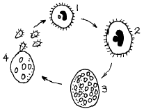
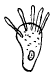
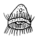
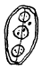

수산양식기능사 (2003-03-30 기출문제)
1과목: 수산양식
1. 굴 양식에서 채묘기 설치 시기는?
- 산란후 1주
- 산란후 2주
- 산란후 3주
- 산란후 4주
(정답률: 59%)

2. 피조개는 산란후 약 몇시간 만에 D형 자패가 되는가?
- 5시간 정도
- 10시간 정도
- 22시간 정도
- 48시간 정도
(정답률: 70%)
3. 대합 양식장에 조위망 시설을 하는 주된 이유는?
- 구획표시
- 도피방지
- 오염방지
- 성장촉진
(정답률: 75%)
4. 자연 상태에서 김의 성장 적온은?
- 4℃ 이하
- 5∼8℃
- 12∼13℃
- 15℃ 이상
(정답률: 77%)
5. 미역의 양성중 어미줄의 시기별 수심조절이 가장 알맞는 것은?
- 4∼5월은 1∼2m 수심층으로 올려준다.
- 2∼3월은 4m 이하로 내려준다.
- 12∼1월은 1m 수심층으로 둔다.
- 10∼11월은 4m 이하로 내려준다.
(정답률: 84%)
6. 대하 양식장에서 급이량이 부족할 때 일어나는 현상과 관계가 깊은 것은?
- 탈피
- 공식
- 기형
- 잠입
(정답률: 100%)
7. 다음 중 잉어 양식에 필요 없는 곳은?
- 친어지
- 산란지
- 섭이지
- 치어지
(정답률: 77%)
8. 자연에 있어서 홑파래의 유주자가 가장 많이 방출되는 시기는?
- 9월 상.중순경 대조시의 아침
- 9월 상.중순경 소조시의 저녁
- 5월 상.중순경 대조시의 아침
- 5월 상.중순경 소조시의 저녁
(정답률: 85%)
9. 다음 중 수하식양식의 장점이라고 할 수 있는 것은?
- 양식생물의 성장이 빠르다.
- 시설비가 적게 든다.
- 양식장의 노화현상이 없다.
- 풍파의 영향을 안 받는다.
(정답률: 85%)
10. 송어의 인공수정용 야코비(jacobi)부화기는 다음 중 어디에 해당되는가?
- 유통식
- 폐쇄식
- 습식
- 침지식
(정답률: 64%)
11. 모래가 많은 장소는 못둑의 가운데에 진흙을 다져서 넣는데 이것을 무엇이라고 하는가?
- 제방
- kettle (집수부)
- core (강벽)
- overflow (물넘기)
(정답률: 70%)
12. 알받이(魚集)관리에 가장 좋은 방법은?
- 부화한 후 깨끗이 씻어서 그늘에 말린다.
- 부화한 후 깨끗이 씻어서 햇빛에 말린다.
- 부화한 후 바로 걷어서 햇빛에 말린다.
- 부화한 후 10일 후에 씻어서 햇빛에 말린다.
(정답률: 80%)
13. 냉장 그물발을 사용하기 위한 목적이 아닌 것은?
- 가능한 어기를 연장하려고
- 갯병으로 인한 피해가 있을 때 발을 교체하려고
- 우량품종을 생산하려고
- 어장의 밀식을 방지하려고
(정답률: 58%)
14. 말목식 굴 양식법을 바르게 설명한 것은?
- 수심 10m 이상되는 고요한 내만에 설치
- 적은 재료로서 많은 생산을 올릴 수 있게 고안한 방법
- 풍파가 조용한 내만에서 간조시 수심이 4m 내외되는 곳에 시행
- 해저가 비교적 단단한 곳에 채묘시기에 돌을 넣어 양성하는 방법
(정답률: 64%)
15. 다음 중 어란(魚卵) 운반시 잘못된 것은?
- 얼음을 넣어 운반한다.
- 봄,겨울의 수온이 낮은 시기를 택하여 운반함이 좋다
- 송어는 발안후 4∼5일 전까지 운반이 가능하다.
- 포장은 많은 구멍을 뚫어 공기가 잘 유통되도록 한다
(정답률: 77%)
16. 잉어의 종묘 6 cm 이상과 이하를 선별하려면 선별기 체눈의 적당한 크기는?
- 1 cm
- 2 cm
- 3 cm
- 6 cm
(정답률: 90%)
17. 실뱀장어가 하구에 많이 올라오는 시기와 거리가 먼 것은?
- 해수의 수온이 8∼10℃ 이상으로 올라가는 시기
- 하천과 연안 바다와의 수온차가 가장 적을 때
- 해가 질 때부터 간조시 또는 조금 때
- 해가 질 때부터 만조 때
(정답률: 84%)
18. 참돔의 자어가 운동력과 시각이 발달하는 시기는 부화 후 언제 부터인가?
- 3∼4일
- 5∼6일
- 7∼8일
- 9∼10일
(정답률: 75%)
19. 방어의 종묘로 가장 적당한 것은?
- 3∼4월에 잡히는 5g 내외의 것
- 7∼8월에 잡히는 100g 이상 되는 것
- 5∼6월에 잡히는 8∼50g 되는 것
- 9∼10월에 잡히는 130g 이상 되는 것
(정답률: 62%)
20. 산란기가 되면 결혼색을 나타내고 숫컷은 주둥이 모양이 구상(鉤狀)으로 굽어지는 고기는?
- 연어
- 은어
- 뱀장어
- 잉어
(정답률: 75%)
2과목: 수산생물
21. 조개와 속살이게 사이에 일어나고 있는 상호작용(coaction)은?
- 기생(Parasitism)
- 상호부조(Mutualism)
- 포식(Predation)
- 편리공생(Commensalism)
(정답률: 90%)
22. 다음 동물 중 가장 광염성인 것은?
- 전복
- 진주조개
- 가리비
- 바지락
(정답률: 86%)
23. 식물성 플랑크톤의 50% 이상을 차지하고 있는 것은?
- 규조류
- 차축조류
- 편모조류
- 접합조류
(정답률: 91%)
24. 장수고래라고도 하며 두장이 체장의 1/4이 되고 세계적으로 분포하며 포획이 금지된 고래는?
- 참고래
- 대왕고래
- 귀신고래
- 긴수염고래
(정답률: 75%)
25. 다음 중 우리나라 천연기념물로 보호를 받는 어류는?
- 틸라피아
- 버들붕어
- 칠성장어
- 황쏘가리
(정답률: 77%)
26. 보통 때는 해양에 살다가 산란할 때에는 강으로 올라오는 올림회유를 하는 어류는?
- 뱀장어
- 송어
- 숭어
- 멸치
(정답률: 73%)
27. 어류의 성장기에 있어서 후기 자어기를 설명한 것은?
- 부화 직후에서 노란자위를 흡수할 때 까지의 시기
- 종(species)의 특징을 나타내는 시기로 반문과 색채가 나타나는 시기
- 노란자위 흡수후 부터 지느러미의 가지와 연조의 정수가 나타날 때 까지의 시기
- 체형이나 반문, 색채등은 성어와 같으나 아직 성적으로 미숙한 시기
(정답률: 70%)
28. 연골어류의 특징에 해당되는 것은?
- 턱이 없다.
- 비늘이 잘 발달되어 있다.
- 전부 아깜 딱지를 가진다.
- 일반적으로 방패비늘을 가지고 있다.
(정답률: 80%)
29. 다음 어류 중 태생종인 것은?
- 청어
- 망상어
- 대구
- 감성돔
(정답률: 79%)
30. 조개류의 이동성에 대한 것 중 가리비에 해당되는 것은?
- 발을 신축시켜 이동한다.
- 분미물질로 풍선을 만들어 그 부력으로 이동한다.
- 패각을 개폐시켜 그 반동으로 이동한다.
- 고착 또는 부착하여 이동하지 못한다.
(정답률: 84%)
31. 해조류의 생장에 특히 중요한 영양소는?
- 인산염과 칼륨
- 질산염과 요오드
- 질산염과 철분
- 질산염과 인산염
(정답률: 91%)
32. 한천의 원료로 쓰이지 않는 해조류는?
- 꼬시래기
- 비단풀류
- 감태
- 우뭇가사리
(정답률: 55%)
33. 분포상 지리적 차이로 기본종과 차이가 생겼을 때 붙이는 이름은?
- 속명
- 아속명
- 아종명
- 과명
(정답률: 77%)
34. 수산생물을 생태적으로 분류하는데 그 기준이 잘못된 것은?
- 부유생물
- 표층생물
- 유영생물
- 저서생물
(정답률: 73%)
35. 다음 중 정온동물에 속하는 것은?
- 대구
- 상어
- 고래
- 꽃게
(정답률: 84%)
36. 다음 중 물곰팡이의 효과적인 예방약제는?
- 테라마이신(teramycin)
- 후란다스-10(furandas-10)
- 말라카이트 그리인(malachite green)
- 머큐로크롬(mercurochrome)
(정답률: 73%)
37. 백점충의 생활사를 그림으로 표시하였다. 발육과정 중의 피낭체는 어느 시기인가?

- 1
- 2
- 3
- 4
(정답률: 86%)
38. 잉어가 많은 점액을 분비하며 죽었다. 점액을 현미경으로 보니 트리코디나병에 감염된 것을 알았다. 현미경에 나타난 병원충은 어느 것인가?



(정답률: 93%)
39. 복부 종양이란 어떤 증상인가?
- 복부에 복수가 가득 차 팽만된 증상
- 복부에 가스가 가득찬 증상
- 장만이라 하며 산란 곤란증을 일으키는 증상
- 복부에 효모의 발효작용으로 위가 팽만된 증상
(정답률: 67%)
40. 무지개 송어의 경우에 부족시 성장이 억제되고 뼈가 굽어져서 기형이 되는 것은?
- 비타민 C
- 비타민 A
- 비타민 B2
- 비타민 B12
(정답률: 77%)
3과목: 양식장 수질관리 및 양식생물 질병
41. 2종의 독물이 상호작용해서 무독성이 되는 작용은?
- 길항작용
- 협력작용
- 영향작용
- 혐기작용
(정답률: 82%)
42. 염분이 생물에 미치는 영향은 매우 큰데, 수중의 염분이 변화하기 쉬운 곳으로 짝지어진 것은?
- 연안과 기수구역
- 연안과 원양구역
- 원양과 심해구역
- 심해와 해저구역
(정답률: 84%)
43. 다음 중 산소 용존량이 높은 물속에서 사는 것은?
- 뱀장어
- 미꾸리
- 송어
- 블루우길
(정답률: 62%)
44. 다음 중 수중에서 산소 결핍에 가장 약한 동물은?
- 갑각류
- 패류
- 해면류
- 어류
(정답률: 100%)
45. 작은 용기속에 많은 수의 활어를 운반할 때 수질관리 사항 중 가장 중요한 것은?
- 용존산소 보충
- 먹이 투여
- pH 유지
- 염분 유지
(정답률: 100%)
46. 해양관측시 수심별 수온 측정에 주로 사용하는 온도계는?
- 최고 최저 온도계
- 봉상 온도계
- 방압 및 피압 전도 온도계
- 해수용 자기 온도계
(정답률: 87%)
47. 일반 해수용 아카누마식 비중계(B호)의 비중 범위는?
- 1.000 ∼ 1.010
- 1.000 ∼ 1.020
- 1.020 ∼ 1.030
- 1.000 ∼ 1.030
(정답률: 64%)
48. 다음 중 해수에서 크게 중요시 되지 않는 영양 염류는?
- 규산염
- 질산염
- 인산염
- 칼륨염
(정답률: 70%)
49. 포렐 수색계 (Forel scale)는 몇 단계의 색으로 되어 있는가?
- 7단계
- 9단계
- 11단계
- 13단계
(정답률: 92%)
50. 공기중의 산소량에 대한 일반적인 수중 용존 산소량은?
- 1/20 정도이다.
- 1/30 정도이다.
- 1/40 정도이다.
- 1/50 정도이다.
(정답률: 74%)
51. 해수는 담수보다 pH 변화가 어떠한가?
- 적다.
- 크다.
- 일정한 관계가 없다.
- 똑같다.
(정답률: 92%)
52. 경도를 측정할 때 사용되는 적정 용액은?
- CaCO3
- EBT
- EDTA
- HCl
(정답률: 92%)
53. pH 지시지를 어떤 용액에 넣었을 때 색깔이 진한 갈색으로 변했다면 그 용액의 수소이온농도는?
- 약한 산성
- 강한 산성
- 약한 알칼리성
- 강한 알칼리성
(정답률: 100%)
54. 야외의 현장 조사에서 많이 이용하는 영양염류 분석의 측정 방법은?
- 비탁법
- 비색법
- 용량법
- 중량법
(정답률: 70%)
55. 용존 산소량 측정에서 반응의 종점을 확정시키는 지시약은?
- 티오황산나트륨
- 단백질
- 탄산마그네슘
- 녹말
(정답률: 72%)
56. 일반적으로 수산 생물이 수중 온도에 따라 독물에 대한 저항력이 약한 경우는?
- 저온
- 고온
- 적온
- 항온
(정답률: 75%)
57. 바퀴벌레나 물벼룩이 양만장에서 대량 발생하면 수색이 황색 내지 황갈색 으로 변하며 뱀장어에게 위험을 준다. 이들이 대량 번식하면 뱀장어에 좋지 않는 이유는?
- 치어에게는 먹이가 되어도 성어에게는 먹이가 되지 못하기 때문
- 수색변화로 태양광선의 투과를 억제하기 때문다. 이들이 분비한 유독물질로 뱀장어에 각종질병을 유발하기 때문
- 이들이 분비한 유독물질로 뱀장어에 각종질병을 유발하기 때문
- 용존산소의 소비량이 급증하여 산소부족을 초래하기 때문
(정답률: 82%)
58. 산소가 부족된 수중에는 혐기성 세균이 작용하여 유기물을 분해하는데 이 때 유독 물질로 분해되는 것이 아닌 것은?
- 황화물
- 염소물
- 메탄
- 황화수소
(정답률: 84%)
59. 다음 중 양식장의 바닥갈이 목적과 효과가 아닌 것은?
- 바닥의 딱딱해진 조개류 양식장의 저질을 연하게 한다.
- 환원 상태인 저질을 갈아주어 산화를 촉진한다.
- 잘피류, 종밋등의 유해 생물을 제거한다.
- 양식장내의 해수의 유동을 저해하고 있는 퇴적된 퇴사를 제거한다.
(정답률: 74%)
60. 물의 유동 환경의 개선 방법으로 적합하지 못한 것은?
- 수중암초의 폭파
- 와동초
- 골파기
- 물길둑
(정답률: 92%)